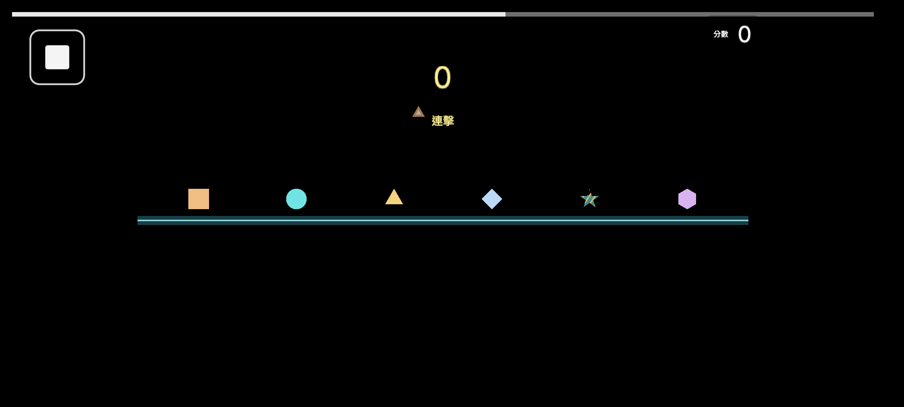

Music Game Engine
在 Windows 上编辑谱面（chart）、给音符编写材质，再把同一个项目带到 Android 上游玩。编辑器和播放器共享 C++20 玩法代码与 Vulkan 渲染器。
八个引擎系统
保存的项目有两个去向。桌面试玩直接打开项目文件，Android 打包器收集被引用的资源并生成安装包（APK）。两端采用相同的谱面规则和玩家视图。
渲染与材质（Rendering & Materials）
Vulkan 渲染器把谱面中的轨道、弧线和圆盘画成可编辑的表面，同时把玩家界面放在独立通道。
- 场景与界面（render passes）
- 三种空间玩法把几何、深度和照明写入高动态范围（HDR）场景，再转换到屏幕颜色。判定文字和连击随后绘制，因此调曝光时仍然清楚。扫描线使用固定相机和有序二维合成。
- 变形与判定（hit anchors）
- 长按条带沿谱面路径生成网格，材质可以移动高光或改变顶点。CPU 保留音符的判定锚点。升级外观时，测试分别核对画面和命中位置。
资源与序列化（Assets & Serialization）
一张谱面包含音符、变速、跨轨控制点以及对音乐和材质的引用。编辑器和播放器均读取同一份数据。
- 稳定保存（round trip）
- 同时刻的音符保持稳定顺序，材质按槽位写出。回归测试把同一谱面连续保存两次并比较文件字节，再重新载入检查长按路径。
- 中断恢复（atomic replace）
- 保存先写同目录临时文件，写完后才替换上一版。桌面和 APK 通过同一资源接口取得谱面内容，手机的音乐可直接从包内读取。
核心运行时（Core Runtime）
歌曲进度、界面动画和触摸采样各有自己的时钟。桌面试玩和手机通过共享的玩家视图执行同一套规则。
- 听到的时刻（song clock）
- 谱面时间等于音乐位置减去曲目偏移。测试将偏移设为 +0.10 秒，谱面 1.00 秒的音符在音乐 1.10 秒判为 Perfect。编辑器波形沿用这个映射。
- 输出延迟（audio output latency）
- Android 从 AAudio 取已呈现音频帧的时间戳，与已写入位置比较后校正歌曲时钟。一次 S21 测量为 24.2 ms，同次按缓冲区大小估算则为 32.0 ms。
输入与手势（Input & Gestures）
一次手势同时携带触点编号、屏幕坐标和事件发生时间。引擎把这些信息传给各模式的命中规则。
- 历史采样（historical touch samples）
- Android 有时把多次移动合并在一个事件里。引擎逐个还原样本，以最近一次歌曲时钟同步为基准求出各自的谱面时刻，保留两帧之间的手指轨迹。
- 投影与去重（hit testing）
- 相机转动后，触点仍对照投影后的轨道和圆环。另一次时序测试让手指提前 10 ms 落下、200 ms 后抬起，系统在按下时只结算一次 Perfect。
玩法与反馈（Gameplay & Feedback）
命中结果同时更新分数、连击和视听反馈。不同类型的音符有各自的结算时机。
- 长按计分（hold checkpoints）
- 长按分别结算头部、沿途采样点和尾部。提前松手时，剩余项目记 Miss。坚持到末尾则自动结算尾部，因此漏掉采样点仍影响总成绩。
- 持续反馈（sustained feedback）
- 头部、采样点和尾部分别触发音效与粒子。有效长按和正在追踪的弧线可以维持循环音，松手或结束时停止，听觉反馈跟随手指状态。
四种玩法模式（Game Modes）
四种模式共享歌曲时钟与计分，再各自定义音符占据的空间、手指要经过的位置，以及作者能编辑的几何。
- 地面与空中（Drop 2D / Drop 3D）
- 二维下落沿路径计算换轨长按的位置。三维下落用相机投影区分地面键和空中点击。连续弧线累积指尖横向覆盖时间与误差，抵达末端后统一评级。
- 圆盘与分页（Circle / Scan Line）
- 旋转圆盘上的宽音符接受其覆盖的任一扇区。扫描线按速度变化和每页设置经过固定坐标。作者能逐音符指定六种形状、颜色、材质和贴图。
编辑器与作者工具（Editor & Authoring）
六个工作页面连接项目、标题、选曲、歌曲编辑、玩家设置和界面集（UI Set）。标题、选曲和界面集的预览调用实际玩家视图。
- 波形与检查（chart audit）
- 自动放置后，每个音符仍可手调。检查器能标出快速同轨连打、超过 8 秒的空段，以及偏离建议拍点超过 120 ms 的音符。点选提示便能回到该段试听。
- 场景内编辑（scene inspection）
- 作者可以在歌曲画面中拖动相机、检查灯光、选中长按查看当前难度的材质来源。独立的试玩进程直接打开保存的项目，验证可交付的玩家视图。
Android 交付（Android Delivery）
打包器沿“歌曲 → 难度绑定 → 材质 → 程序和图片”收集依赖，生成可以独立安装的 Android 应用。
- 依赖闭包（dependency closure）
- 在 S21 打包测试工程中，从复制整个目录改为按引用收集，APK 从 111.9 MB 缩至 39.5 MB。清单审计找到 104 个实际使用的资源，缺失和未使用的资源均为 0。
- 更新与恢复（incremental install）
- 同一工程覆盖安装时只解出 3 个有变化的文件并移除了弃用封面。播放器重建 Vulkan 设备时释放与旧设备绑定的资源。五个界面各做 20 次后台返回，截图均与返回前匹配。
 二维下落（Drop 2D）按住音符，随长按路径换轨。
二维下落（Drop 2D）按住音符，随长按路径换轨。
 三维下落（Drop 3D）点击地面音符，跟随空中弧线。
三维下落（Drop 3D）点击地面音符，跟随空中弧线。
 圆盘（Circle）在移动的圆盘上对准判定环。
圆盘（Circle）在移动的圆盘上对准判定环。
 扫描线（Scan Line）扫描线经过音符时点击。
扫描线（Scan Line）扫描线经过音符时点击。图形学实现
三种空间玩法在同一条管线内处理几何、照明和显示转换。扫描线走固定相机的二维路径。作者能在实际音符上改材质，再用桌面参考图和手机硬件计数器检验画面与成本。
沿一条弯折长按交付材质
在 Drop 2D Studio / Hard，作者只覆盖长按主体的材质。球形预览说明光怎么反射，音符和场景预览则能看出条纹会不会在换轨处断开。
 材质球（sphere）
材质球（sphere）
 音符对象（object）
音符对象（object）
 运行场景（scene）
运行场景（scene）- 沿路径取样（path UV）
- 条纹相位由沿路径的距离乘以密度，再减去歌曲时间乘以流速。每一段使用累计距离，过弯时条纹自然接续，暂停或重放到同一歌曲时刻也能复现。
- 绑定与编译（binding & compilation）
- 引擎依次检查当前难度、歌曲和默认材质，还能分别绑定长按的普通与激活状态。桌面把作者的 GLSL 嵌入引擎着色器，校验 SPIR-V 和资源布局。失败时沿用上一版，通过后才将编译产物装进 APK。
- 外观回归（anchor regression）
- 升级舞台外观后，程序逐对比较 36 张新外观抓帧与对应旧外观的判定锚点。记录到的位置差均为 0 px。
接近 120 FPS 时，测量外部显存读写
2400 × 1080 的 RGBA16F 图像每帧约 20.7 MB。旧路径把它写回内存，随后为显示转换再读一次。新路径在同一个 Vulkan 子通道（subpass）内读取分块颜色，直接写入 sRGB 交换链。HUD 仍单独绘制。
写回后读入5.13
分块内转换0.33
Galaxy S21（Mali-G78）· Drop 3D / Hard · 固定在歌曲第 1.3 秒 · 120 Hz · GPU 频率未锁定
四轮按原路径、分块、分块、原路径运行，均为 119.4–119.5 FPS。硬件计数器记录的外部读写带宽减少约 93.6%。在 90° 横屏的原始抓图中，2,592,000 个像素里只有 3 个的颜色差超过两个 8 位色阶。
查看四轮测量与同帧画面
 Drop 3D · Disney 材质的游戏画面
Drop 3D · Disney 材质的游戏画面双向反射分布函数（BRDF）
把 Brent Burley 的 Disney 2012 模型移植到音符材质。作者可调整粗糙度、拉丝方向、织物光泽和清漆高光。
- 着色实现
- 漫反射、各向异性 GTR2 高光与 GTR1 清漆分别求值。环境反射用弯曲法线近似各向异性，以控制实时采样成本。
- 数值验证
- 1,296 组输入的 GPU 结果与双精度 CPU 参考值最大绝对误差不超过 4 × 10⁻⁶。点光源下的织物、拉丝、清漆和蜡材质测试平面逐像素误差不超过 1/255。
原始方法 · Brent Burley（2012）
 Drop 3D · 舞台方向光与阴影
Drop 3D · 舞台方向光与阴影有变形的音符怎样投影（shadow mapping）
同一方向光照亮舞台并投下阴影。若音符被材质拉弯，阴影轮廓也要跟着变。
- 同一顶点程序
- 阴影投射通道执行与主场景相同的顶点变形和遮罩，从光源视角写深度。这样动态音符投下的是当前形状的影子。
- 设备与参照
- 桌面用 2048² 阴影图与四次深度比较，S21 高画质用 1024² 和一次比较。低角度方向光、遮罩与变形测试中的采样像素对照 CPU 光线遮挡结果，最大差为 0/255。
 Drop 3D · 用棋盘格查看玻璃后的偏移
Drop 3D · 用棋盘格查看玻璃后的偏移玻璃怎样折射轨道（screen-space refraction）
透明音符从不透明场景的颜色快照和线性深度中寻找折射后的像素。粗糙玻璃采样较模糊的 mip 层级。
- 光线搜索
- 桌面沿折射方向走 24 步，再用 4 次二分细化交点。S21 高画质用半分辨率快照和 12 步加 2 次细化。超出屏幕时回采环境。
- 可验证的范围
- 透明板的 8,489 个像素对照 CPU 光线模型，桌面路径判错 0 个，半分辨率路径判错 1 个。快照只包含不透明几何，多层玻璃间的互相折射超出这条路径。
 Drop 3D · 桌面屏幕空间散射
Drop 3D · 桌面屏幕空间散射厚度与透光（subsurface scattering）
桌面路径先收集漫反射，再沿水平和垂直方向按 RGB 各自的半径扩散。红、绿、蓝可以有不同的扩散距离。
- 保持轮廓和高光
- 对象编号、深度和法线限制滤波跨过轮廓。合成时加回“模糊漫反射减原漫反射”的差值，保留镜面细节。
- 交付取舍
- 1080p 的 RTX 4070 Laptop 上增加约 0.27 ms。S21 强制开启整套效果时，GPU 工作量是原来的 3.7–4.5 倍。手机两个档位都保留薄表面背光。
 Circle · 发光音符经过圆盘表面
Circle · 发光音符经过圆盘表面发光音符照亮舞台（emissive proxy lights）
沿长按条或判定线布置小型点光源，近似发光表面对附近轨道的照明。发光外观和照到旁边物体是两个独立效果。
- 选择哪些灯
- 按光通量和到判定区的距离排序，已选灯保留 25% 滞回（hysteresis），避免两个接近的音符在相邻帧来回抢占灯位。
- 有限的灯位
- 桌面最多 8 个代理灯，S21 高画质最多 4 个并计入舞台灯总额。它们照到轨道、判定线与装饰。音符自身不接收这组灯，代理灯也不投阴影。
 离线轨道间接光 · 从左到右为路径追踪参考、探针结果和绝对差值
离线轨道间接光 · 从左到右为路径追踪参考、探针结果和绝对差值环境光与间接光实验（IBL / GI）
运行时读取离线烘焙的环境。另做了一套 CPU 路径追踪参考，用于判断额外的间接光方案值不值得交付。
- 交付的环境光
- 漫反射使用 9 个 RGB 球谐系数。镜面反射按粗糙度查预过滤立方体纹理的 9 个层级，让同一环境在粗糙和光滑表面产生不同反射。
- 留下的实验
- 探针网格在四组受控场景中，轨道间接光相对参考的平均误差为 38%–44%，超过预设的 25% 上限。参考图和实验保留作测试，玩家版本使用前述环境光。
扫描线的形状、颜色和贴图（per-note styling）
扫描线把音符当作带轮廓的二维图形绘制。作者可以只改一颗星的纹理，同时继续继承歌曲的颜色或难度的材质。画面与判定各有独立的输入。

Galaxy S21 · 六种轮廓在同一条扫描线上 Windows 同帧局部 · 从左到右为贴图 30°、0°、移除贴图
Windows 同帧局部 · 从左到右为贴图 30°、0°、移除贴图- 逐字段覆盖（per-field overrides）
- 方、圆、三角、菱形、星形、六边形共用同一套编辑入口。形状、RGBA、材质、贴图和 UV 变换分别沿“单音符 → 难度 → 歌曲 → 默认”寻找有效值。旋转纹理只改变图案朝向。
- 只改一项的同帧对照
- Windows 固定在第 8.875 秒。以星形音符的 30° 版本为基准，把贴图转回 0° 改变 271 个像素，移除贴图改变 463 个。两次在所选音符之外都得到 0 个变化像素。
设备画质分档（quality tiers）
标准档保留主光和分块路径，高画质允许歌曲使用额外灯光、阴影与泛光（bloom）。泛光先从 HDR 颜色提取亮部，逐层降采样再上采样，按总权重归一后在色调映射前加回。开启泛光的帧需要离屏纹理。
设备画质分档（quality tiers）| 空间渲染 | 桌面 | S21 标准 | S21 高 |
|---|
| 舞台灯（stage lights） | 方向光及最多 16 盏局部灯 | 仅主光 | 方向光及最多 8 盏局部灯 |
|---|
| 方向阴影（shadows） | 2048² 阴影图 | 平面投影 | 1024² 阴影图 |
|---|
| 泛光（bloom） | 按歌曲开启 | 关闭 | 按歌曲开启 |
|---|
| 玻璃折射（refraction） | 全分辨率，24 步与 4 次细化 | 半透明 | 半分辨率，12 步与 2 次细化 |
|---|
| 次表面散射（scattering） | RGB 扩散与背光 | 背光 | 背光 |
|---|
| 发光代理灯（proxy lights） | 最多 8 个 | 关闭 | 最多 4 个 |
|---|
AI 在项目中的使用
项目里有三种不同的 AI 工作：编程助手参与引擎开发，音频模型从音乐提取信号，编辑器助手调用有明确输入和输出的工具改谱。作者可以看到修改、试听并撤销。
开发中的分工（AI-assisted development）
三月开发日志记载，大部分代码由作者指导 AI 编程助手生成。作者划分八个系统、确定接口和资源所有权，并负责审查和故障定位。
- 架构决定
- 玩法模块只提交绘制需求，Vulkan 渲染器统一创建与释放 GPU 资源。这个约束决定了哪些代码能被四种玩法共用。
- 一次人工诊断
- 后处理画面闪烁时，场景通道已声明开始前的同步，颜色写入结束后却缺少对采样端的可见性。作者定位了这条依赖，让计算和片元着色器再读取已写完的颜色。
音乐分析与自动放置（beat tracking）
作者从波形上挑选建议，再生成可以逐个修改的音符。模型输出的时间点与后续的编谱规则分别处理。
- 模型输出
- madmom 的循环神经网络（RNN）提取节拍、每小节首拍和起音。分析程序把 50 ms 内的首拍与公共拍点对齐，再按强度与间距生成三种难度的标记。
- 编谱规则
- 在下落轨道里，强起音偏向滑击，较长而柔和的声音可形成长按。频谱质心参与选择起始轨道。作者在波形上试听和重排，复杂的跨轨路径仍可手工绘制。
能执行编辑的助手（Editor Copilot）
助手读取当前谱面，调用具名编辑工具，再运行谱面检查。一轮修改留下可撤销记录。
- 真模型测试
- 一次中文测试要求镜像第 30–35 秒的音符，再把第 10 秒附近的同轨连打改成左右交替。三轮真模型测试均通过谱面约束检查，撤销后恢复了各自的起始状态。
- 撤销顺序（undo history）
- 作者的手调、Copilot 修改与通过模型上下文协议（MCP）连接的外部工具共用历史。另用四种模式各 500 组随机编辑序列验证撤销和重做。作者后来手调的音符先撤销。
着色器生成与风格迁移（shader generation & style transfer）
生成视觉效果和改编谱面使用两套实现。一个把编译器的结果反馈给模型，另一个从参考谱统计特征。
- 编译反馈（compiler feedback）
- 模型起草效果材质的片元着色器（fragment shader）。编译失败时，生成器把源码与诊断送回重试。成功后成对安装 GLSL 源文件和 SPIR-V 产物。
- 谱面迁移
- 算法统计参考谱的音符类型、各轨出现频率与换轨分布，保留目标音符的时间，调整可处理音符的类型或轨道。语言模型可以另写一份改动摘要。
与现有音游引擎的区别
如果目标是做一款有自己曲目、触屏规则和视觉风格的 Android 音游，本项目把编谱、可编程材质、手机验证和安装包交付放在同一个工程里。三种现有工具提供了不同的创作与分发路径。
对照工具已有工具的工作方式本项目的选择与优势
Sonolus
已有工具的工作方式开发者为通用客户端编写绘制、输入和判定逻辑。关卡还可提供游玩、观看、预览和教程，自建服务器可分发引擎与关卡。
引擎规范 · 自建服务器
本项目的选择与优势想把作品作为一个应用交给评审时，作者可在 Windows 编辑标题、选曲和谱面，把播放器与引用资源一起导出 APK。收件人安装后即可游玩。发布这个原型无需另设内容服务器。
Project OutFox
已有工具的工作方式以 StepMania 为基础，面向舞蹈、乐器与按键玩法。官方列出 18 种游戏类型，可读 .sm、.ssc、.bms 等多种谱面格式，也支持音符皮肤（NoteSkins）和主题。
官方玩法与格式
本项目的选择与优势本项目把开发投入集中在四种触屏玩法的逐部件外观。作者能只为 Hard 的长按换一段 GLSL，检查它是否改变判定锚点，再在 S21 测 GPU 的实际读写成本。需要沿用多格式现有曲库时，OutFox 的格式覆盖更广。
ArcCreate
已有工具的工作方式这套 Unity 工具以 .aff 作谱见长。桌面编辑器支持时间、镜头和 Lua 场景控制。关卡可以打包，供 Android 或 iOS 播放器导入。
项目说明 · 关卡打包
本项目的选择与优势需要在同一项目中尝试跨轨下落、地面与空中音符、旋转圆盘或分页扫描时，四种玩法可复用音乐时钟、编辑器和交付流程。作者还可把 Copilot 批量改谱和之后的手调放进同一撤销历史。
对照依据为各项目的公开文档，核对日期为 2026 年 11 月 19 日。本站 GPU 数字衡量的是本引擎在指定场景下修改前后的差异。